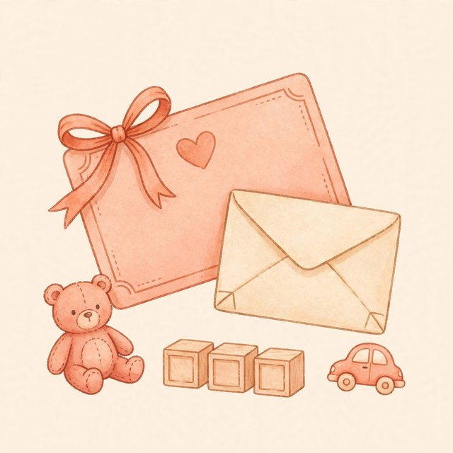
金券・実用系
目安：5,000円前後
こども商品券e-Gift
子ども用品に寄せられるので、現金より少し贈り物らしい。
確認：使える店舗や期限は事前に確認。
贈る前に、もらう側の本音を一度だけ見ておく。
約1,871件の商品傾向をもとに、2人目でも贈りやすいもの、確認してから贈りたいもの、かぶりやすいものを分けました。Amazon・楽天・Yahooなどで探しやすいように整理しています。
各ショップの検索ページへ移動します。掲載可否・価格・在庫は遷移先で確認してください。
ここに並べている商品は、今どきの出産・育児系カタログで見かける候補をもとにした編集リストです。税込価格は確認時点の販売価格です。最新の価格・送料・詳しい仕様・在庫は、各ショップで確認してください。
条件に合う商品がありません。キーワードや棚を変えてみてください。
2人目でも、好みが分からなくても、使い道を相手に委ねられる。味気なさはメッセージで補えます。

子ども用品に寄せられるので、現金より少し贈り物らしい。
確認：使える店舗や期限は事前に確認。
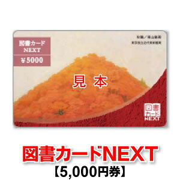
上の子の絵本にも使えて、2人目家庭と相性がいい。
確認：本を読む家庭かどうかだけ軽く想像しておく。
産後すぐの食事づくりを休める、かなり実用寄りのギフト。
確認：対象エリアとサービス利用経験は確認したい。
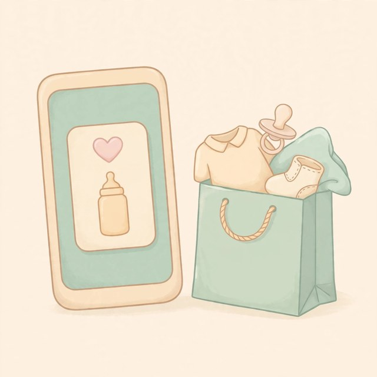
自由度が高く、細かい買い足しに回しやすい。
確認：地域限定・用途限定のカードは代替候補も用意。
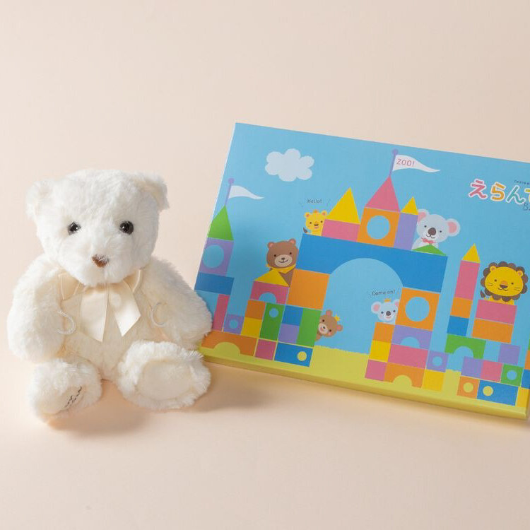
ハーモニック
育児用品や家族で楽しめる体験から、今の暮らしに合うものを選んでもらえる。
確認：申込期限と、希望の商品が収録されているかを確認。
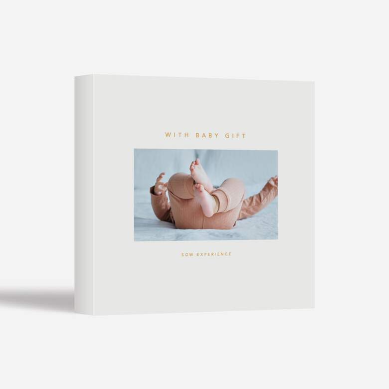
ソウ・エクスペリエンス
家族でのおでかけや自宅に届く品から選べる体験カタログ。
確認：体験の対象エリアと利用期限を確認。
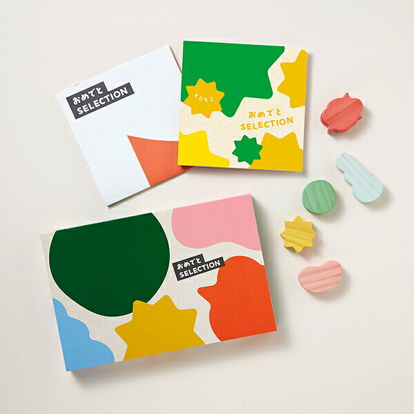
大和
必要なものを選べるカタログに、上の子も一緒に楽しめる絵本とパズルが付く。
確認：付属のおもちゃの対象年齢と申込期限を確認。
赤ちゃんだけでなく上の子にも少し気持ちが向くと、家族全体で受け取りやすくなります。
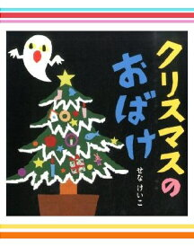
上の子にも赤ちゃんにも長く読める。場所を取りにくいのも強い。
確認：すでに持っている定番絵本はかぶり確認を。
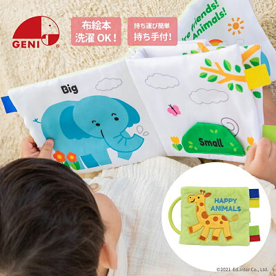
ジェニ
赤ちゃん用でも上の子が一緒に見せられる。軽くて贈りやすい。
確認：布絵本は家に複数あることも多い。
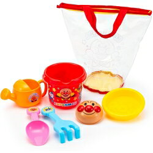
アンパンマン
上の子向けの外遊びギフトとして分かりやすい。
確認：庭・公園遊びをする家庭向け。
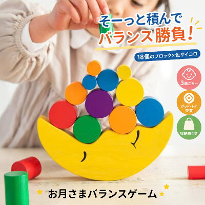
ジェニ
大きすぎず、きょうだいで遊べる候補にしやすい。
確認：対象年齢と小さなパーツは確認。
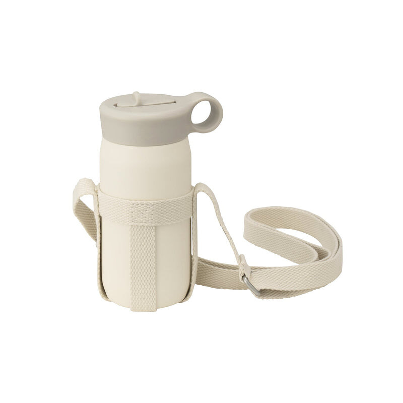
KINTO
赤ちゃん連れのおでかけでも、上の子が自分の飲み物を持ちやすい。
確認：園や学校で使うなら、容量やストラップの指定を確認。
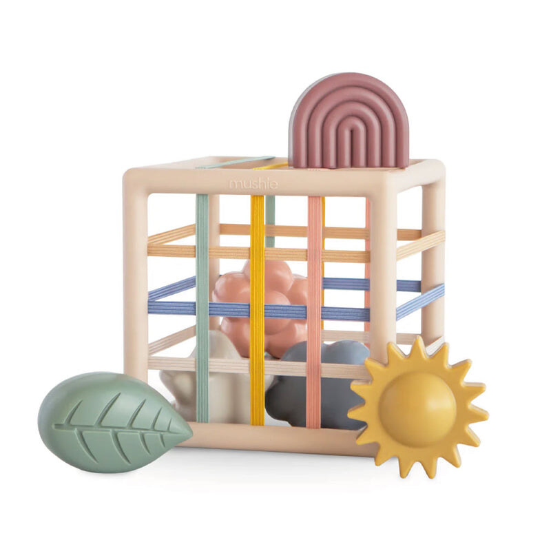
mushie
形を見比べながらパーツを出し入れして遊べる。
確認：上の子の年齢に合うか、パーツを赤ちゃんの手の届かない場所に片付けられるかを確認。
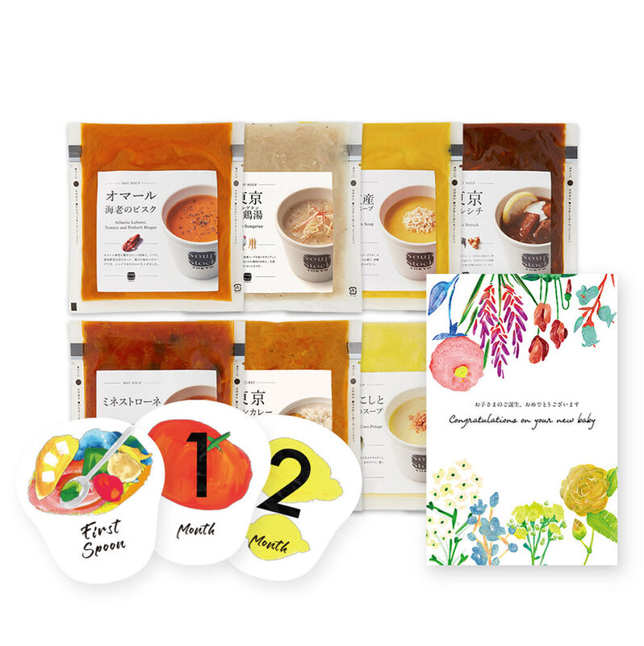
Soup Stock Tokyo
ごはんを作る余裕がない日に、家族で温めて食卓に出せる。
確認：冷凍庫の空きと、家族のアレルギー表示を確認。
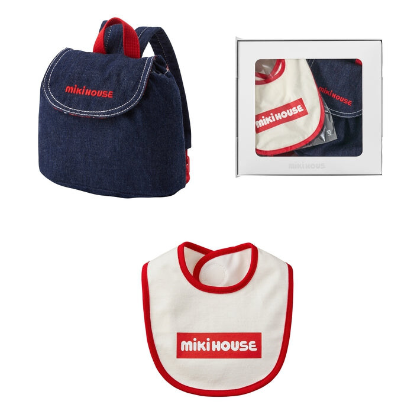
ミキハウス
歩き始めた子の外出用に。上の子が対象サイズなら、自分の荷物を持てるお祝いに。
確認：リュックのサイズと肩ひもの長さが上の子に合うかを確認。
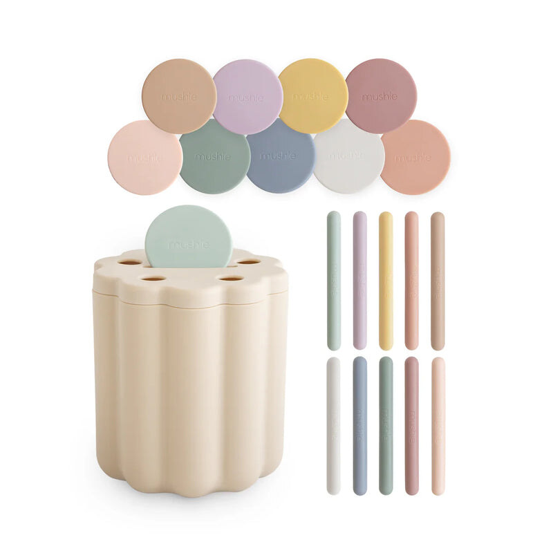
mushie
コイン型のパーツを入れて取り出す、指先を使う遊びに。
確認：対象年齢を確認し、遊び終えたら赤ちゃんの手が届かない場所へ。
華やかさは控えめでも、産後の暮らしではいちばん助かる棚。親しい相手ほど選びやすいです。
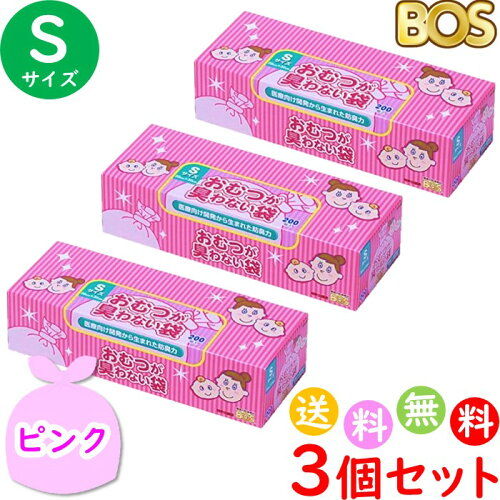
おむつ期の家庭なら使い切りやすい。2人目でも助かる消耗品。
確認：サイズよりも枚数・置き場所の負担を見たい。
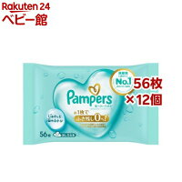
パンパース
おしりふきは消費が早い。メーカー指定がなければ候補にしやすい。
確認：肌に合う・合わないはあるので無香料系が無難。
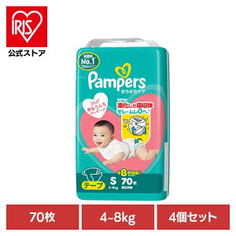
パンパース
新生児サイズを避け、少し先に使えるサイズを選びやすい。
確認：テープ派・パンツ派、サイズは確認。
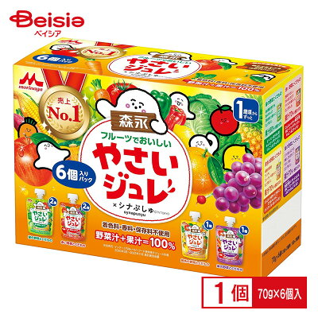
森永
離乳食期に入る頃の小さな楽しみとして渡しやすい。
確認：月齢とアレルギー表示は必ず見る。
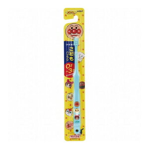
ライオン
地味だけど減る。育児の消耗品としてかなり現実的。
確認：ギフト感は薄いので他のものと組み合わせたい。
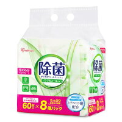
キレイキレイ
外出や食事まわりで使える。家庭に余っても困りにくい。
確認：ノンアルコールなど刺激の少ないものを優先。
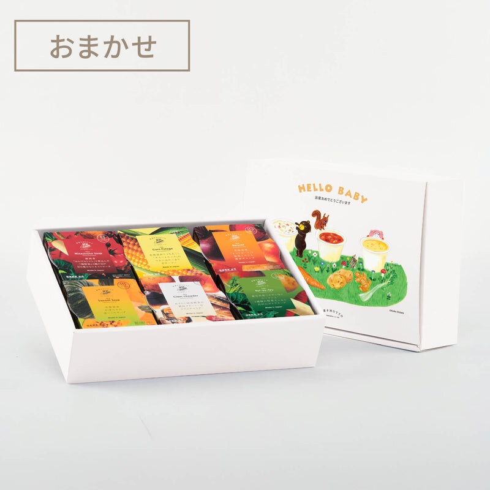
野菜をMOTTO
常温で置いておき、食事を用意する時間が取りにくい日に温めて出せる。
確認：味の組み合わせとアレルギー表示を確認。
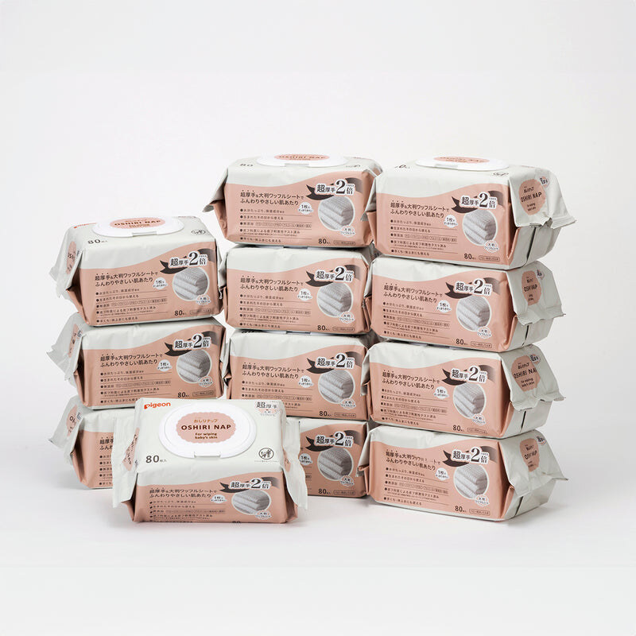
ピジョン
おむつ替えで消費が早いおしりふきのまとめ買い。
確認：普段使っているタイプとストックの置き場所を確認。
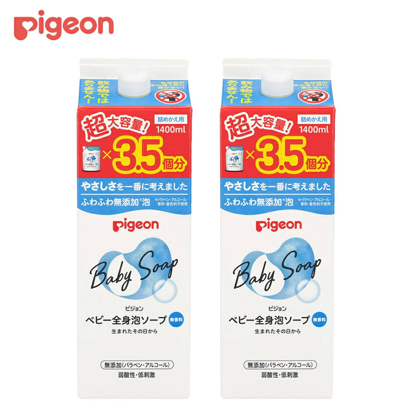
ピジョン
同じ泡ソープを使う家庭なら、入浴のたびに減る分をまとめて補える。
確認：対応する泡ポンプ容器を持っているかを確認。
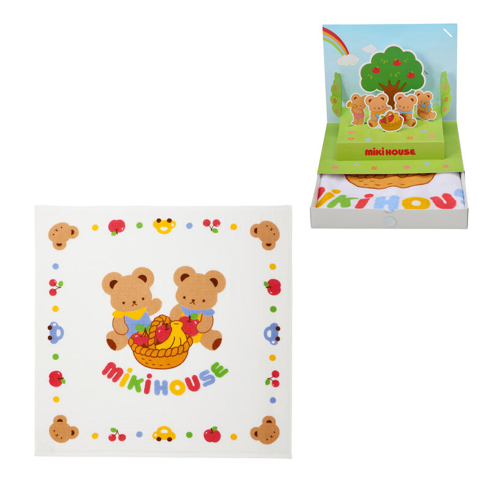
ミキハウス
沐浴後の体拭きに。洗濯が追いつかない日に替えがあると助かる。
確認：家庭で使いやすいサイズと素材かを確認。
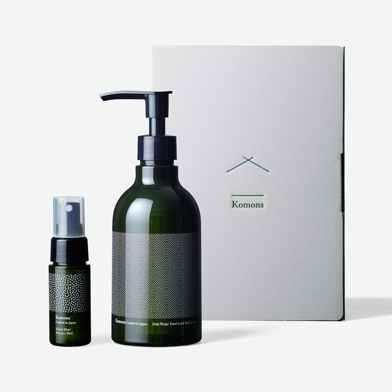
Komons
食器洗いと洗いにくい布製品のケアに使える日用品セット。
確認：香りの好みと、ミストを使える素材を確認。

Soup Stock Tokyo
外出や忙しい日の離乳食に、買い置きできる個包装のセット。
確認：対象月齢と原材料を確認。すぐ使う場合は離乳食の進み具合も聞いておく。
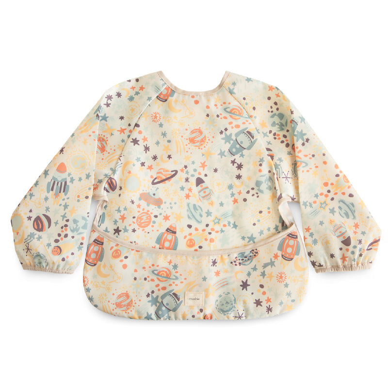
mushie
手づかみ食べのときに袖まで覆え、食後の着替えを減らしやすい。
確認：首まわりと袖のサイズ、洗い方を確認。
赤ちゃん用品が集まりがちな時期だからこそ、母本人が少し楽になるものは印象に残ります。
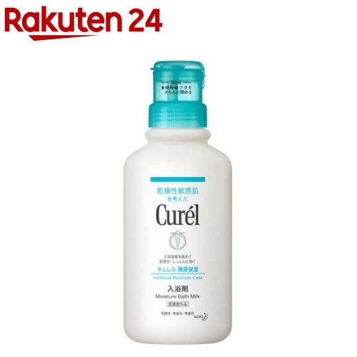
キュレル
自分では後回しにしがちなケア用品。価格も重すぎない。
確認：香りや肌質に合うか、低刺激系を優先。
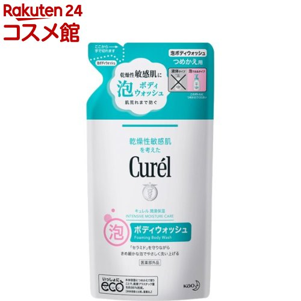
キュレル
家族で使える実用品。消耗品として受け取りやすい。
確認：スキンケアは好みがあるので定番ブランドが無難。
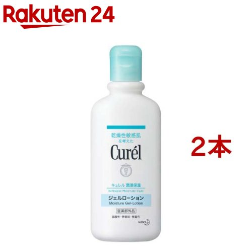
キュレル
産後の家族ケア用品として、赤ちゃん以外にも使いやすい。
確認：肌に合わない場合もあるので押しつけ感を出さない。
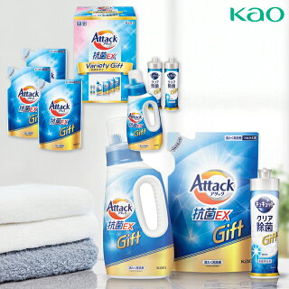
花王
家事の量が増える時期に使い切れる。職場の連名にも合う。
確認：洗剤の香りやブランド指定がある家庭には確認。
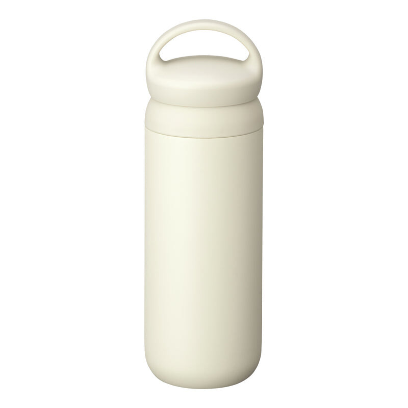
KINTO
授乳や抱っこの合間に飲めるよう、手が届くところに飲み物を置いておける。
確認：満水時の重さと置き場所に合うかを確認。
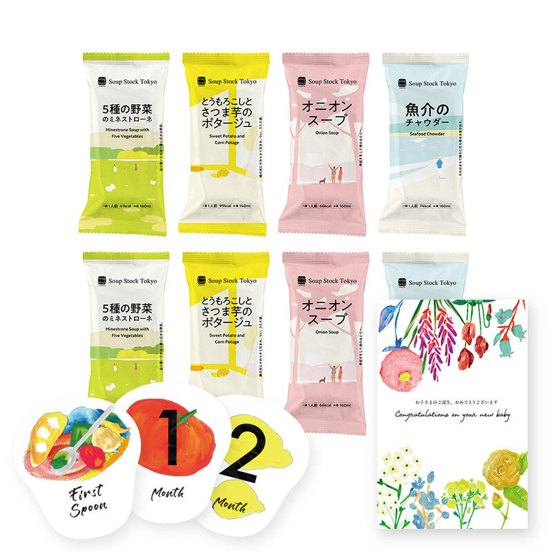
Soup Stock Tokyo
お湯を注いで食べられ、冷凍庫がいっぱいでも保管しやすい。
確認：苦手な食材とアレルギー表示を確認。
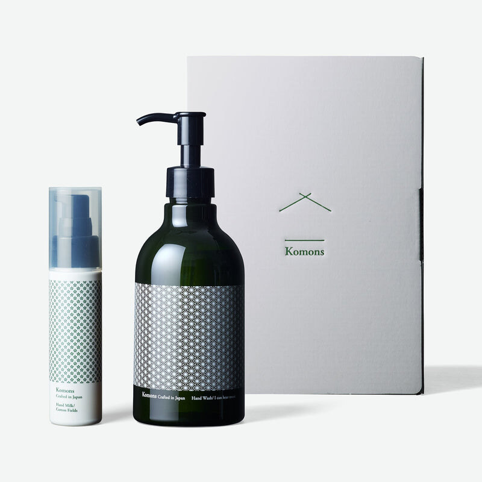
Komons
手洗いが増える時期に、洗面台で手洗い後のケアまでできる。
確認：香りや肌質の好みを確認。
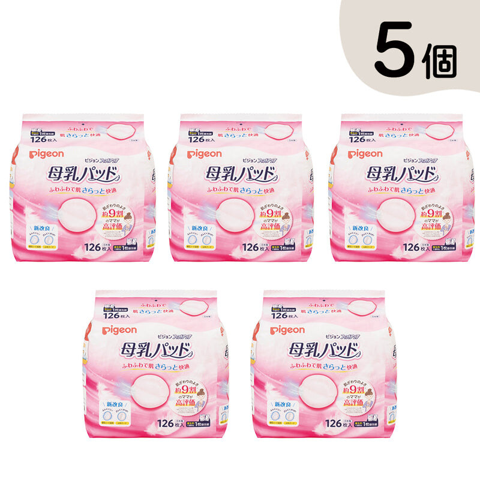
ピジョン
普段から同じ母乳パッドを使っている人に、買い足しの手間を減らせる。
確認：授乳スタイルと愛用している銘柄を本人に確認。
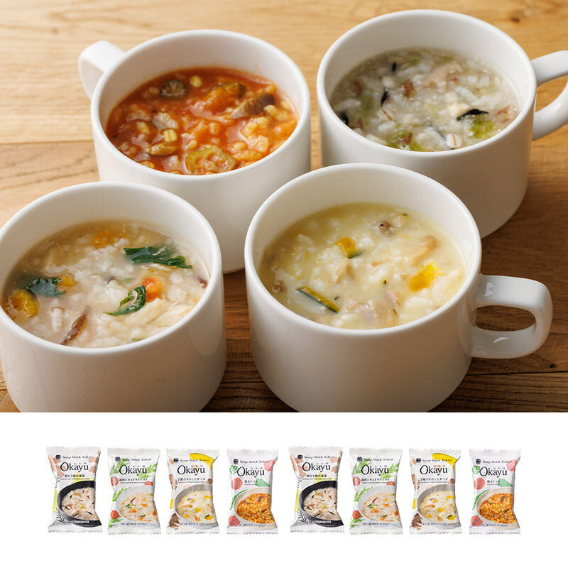
Soup Stock Tokyo
食事が後回しになった日でも、お湯で用意できるおかゆのストック。
確認：家族のアレルギー表示と味の好みを確認。
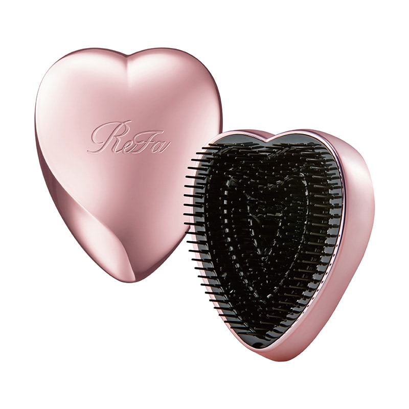
ReFa（MTG）
ハート型の見た目が可愛い定番ヘアブラシ。とかすだけでツヤが出て、ポーチに入れて持ち歩ける。「自分では買わないけど、もらうと嬉しい」美容グッズの代表格。
確認：色のバリエーションが多い。相手の好みの色が分かるとなお良い。
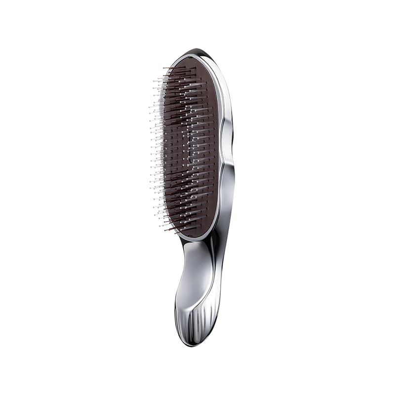
ReFa（MTG）
シャンプー時に使う頭皮ブラシ。頭皮の毛穴汚れをブラッシングしてすっきりさせる。産後の抜け毛や頭皮のベタつきが気になる時期のケアに。
確認：シャンプー時に使うタイプで、乾いた髪用のブラシとは用途が違う。ひとこと添えて贈ると伝わりやすい。
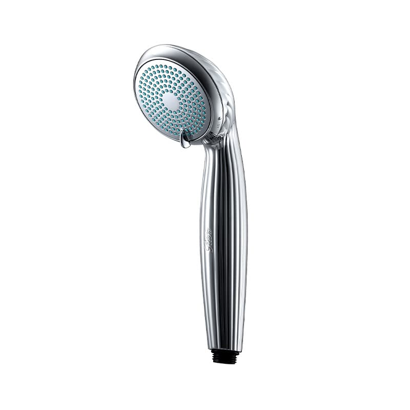
ReFa（MTG）
ウルトラファインバブルとマイクロバブルを出すシャワーヘッド。毎日のバスタイムを美容時間に変える、ちょっと贅沢なママ向けギフト。取り付け用アダプター付属。
確認：ほとんどのシャワーホースに取り付けできるが、一体型など付けられない場合がある。相手の浴室環境が分からない場合は避ける。
いい商品でも、サプライズ向きではない棚。相手が欲しいと言っている場合だけ強い候補になります。
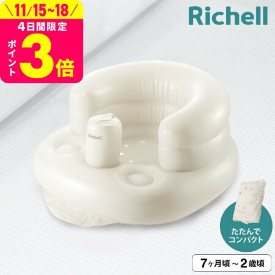
リッチェル
離乳食期の実用品。ただしすでに用意済みの家庭も多い。
確認：置き場所・使用月齢・色を確認。
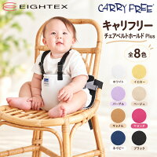
キャリフリー
外食や帰省が多い家庭には便利。コンパクトなのが良い。
確認：使うシーンがない家庭には出番が少ない。
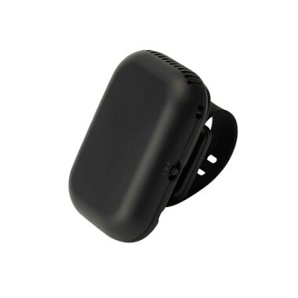
BabyHopper
夏場のおでかけに便利。季節性のある実用品として候補に。
確認：安全設計・取り付け可否を確認。
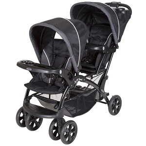
愛育ベビー
2人目ならではのニーズが強いが、高額なので本人希望が前提。
確認：レンタル期間・生活導線・収納場所を必ず確認。
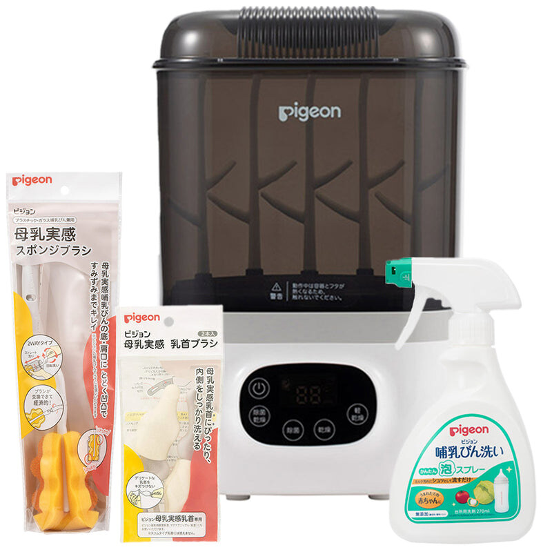
ピジョン
洗った哺乳びんのスチーム除菌と乾燥をまとめて任せられる。
確認：哺乳びんの使用頻度、耐熱性、本体の置き場所を確認。
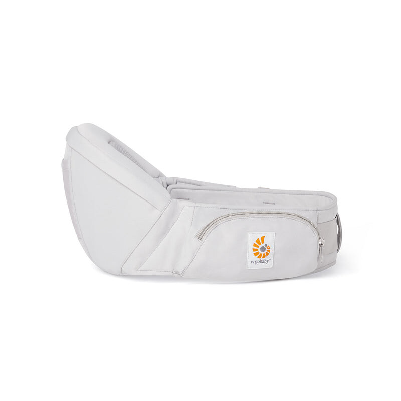
エルゴベビー
歩き始めた子を抱っこしたり下ろしたりする短い外出に。
確認：対象月齢・体重と、使う人の腰回りのサイズを確認。
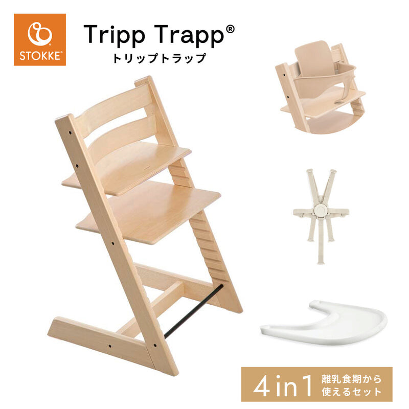
STOKKE
家族の食卓に合わせて使える、チェアと離乳食用アクセサリーのセット。
確認：手持ちの椅子の有無、テーブルとの高さ、設置スペースを確認。
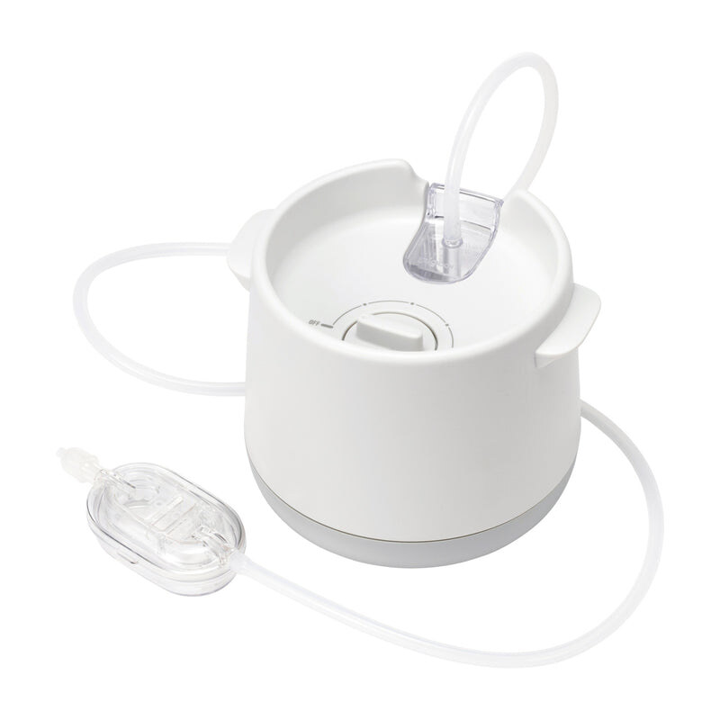
ピジョン
いつものケア用品として、自宅で鼻水を吸引できる電動タイプ。
確認：すでに同種の機器を持っていないか、部品の手入れ方法も確認。
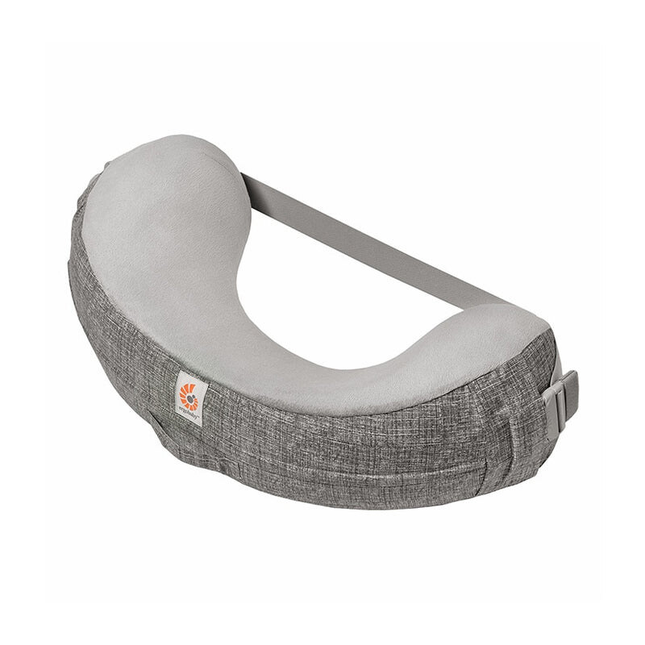
エルゴベビー
授乳時に赤ちゃんを支えるクッション。毎日使うものなので、使い心地が合う家庭向け。
確認：授乳姿勢や、手持ちのクッションの有無を本人に確認。
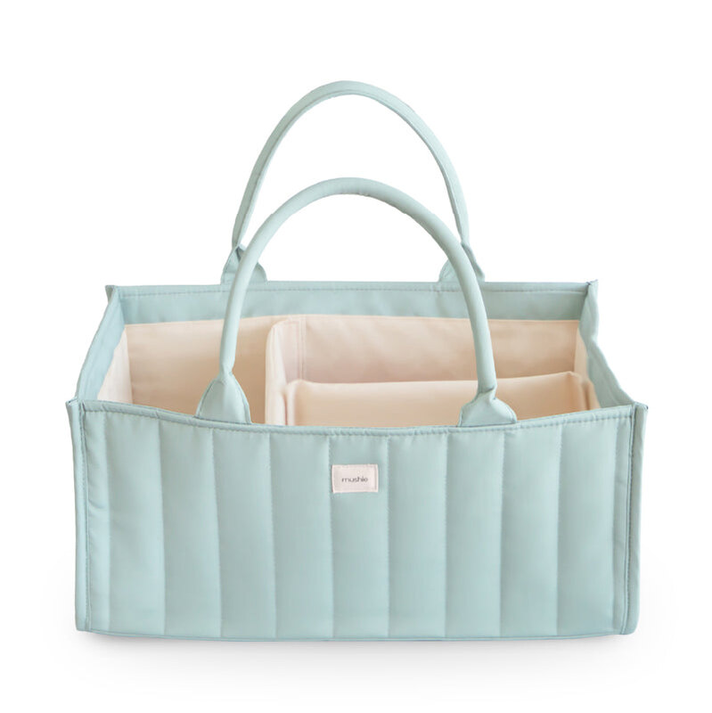
mushie
おむつ替え用品をまとめ、よく使う部屋へ持ち運べる。
確認：いつものおむつ替え場所と収納の寸法を確認。
悪い商品ではありません。けれど、2人目や親しい相手以外では「もう家にある」が起きやすい棚。ここには、贈るならきちんと選びたい2,000円以上の定番だけを残しています。
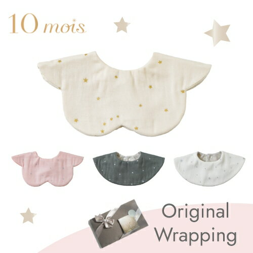
ディモワ（10mois）
スタイは定番だが、1人目の時点でたくさん持っている家庭が多い。贈るなら、つけ襟のように使える日本製のきちんとした1枚を。
確認：欲しいと言われた時だけ。柄・素材も確認。
aden+anais（エイデンアンドアネイ）
おくるみは出産祝いで最も被る定番のひとつ。複数枚のセットではなく、1枚を厳選して贈りたい。
確認：最も被る定番。贈るなら1枚を厳選し、持っていないか確認。
10mois
洗い替えが必要な家庭に贈りやすい、落ち着いた色のスタイ。
確認：上の子のお下がりや手持ちが十分ある場合は、別の棚から選ぶ。
mushie
外出時やお風呂上がりに使いやすい、おくるみの単品。
確認：すでに持っている枚数を聞き、柄やサイズの好みを確認。
ミキハウス
洗い替えが欲しい家庭に、寝冷え対策として選べるガーゼの一枚。
確認：手持ちの有無、季節に合う厚さ、身長に合うサイズを確認。
10mois
離乳食の食卓で使える、プレートセットとビブの組み合わせ。
確認：上の子の食器やビブを使い回す予定があるかを確認。